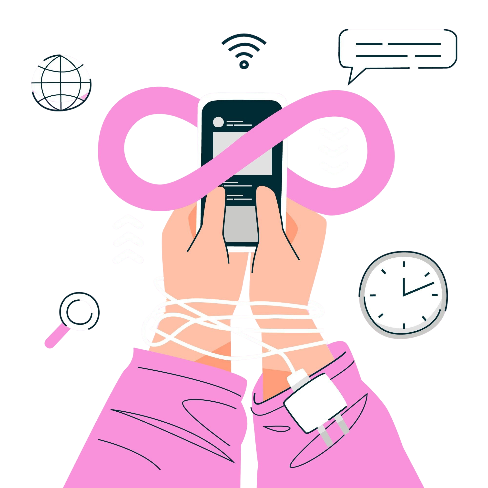
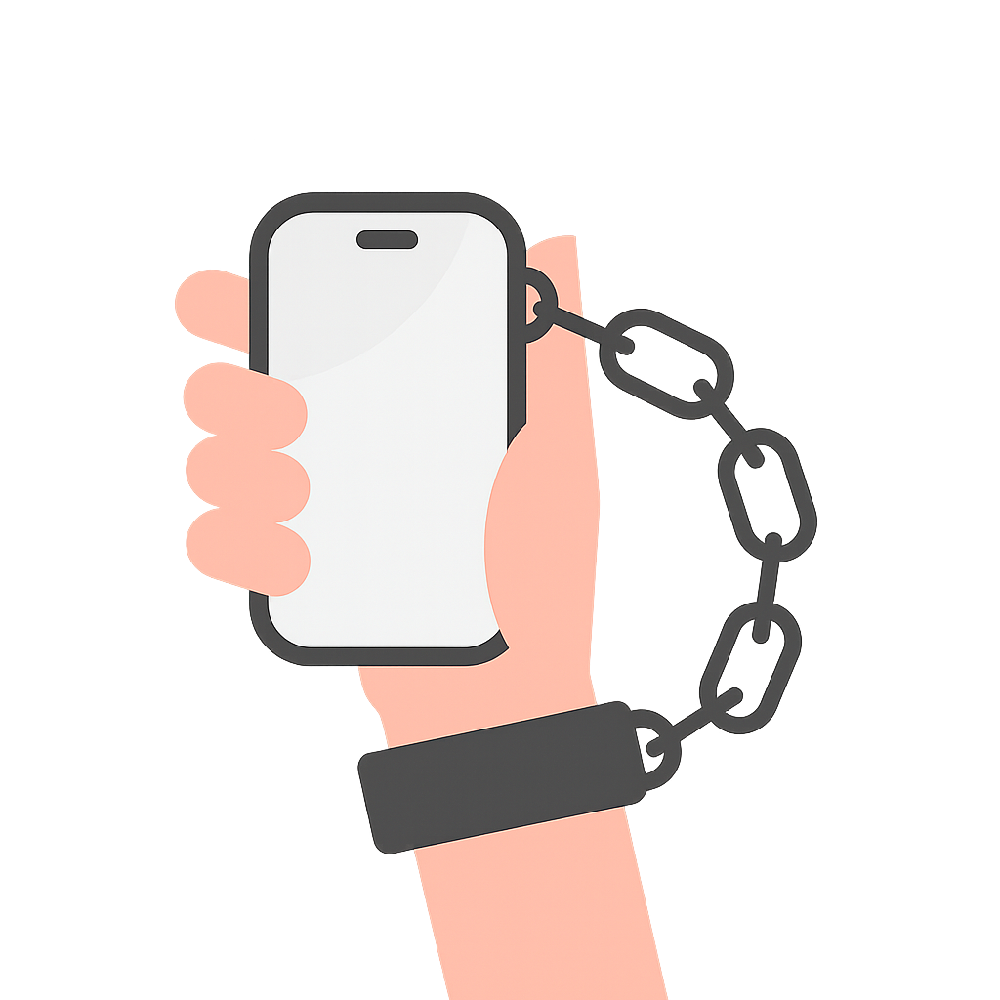

What is Screen Addiction?
Screen addiction is the excessive use of smartphones, tablets, or computers, often leading to difficulty in focusing, loss of real-life connection, and disturbed daily routines.


Screen addiction is the excessive use of smartphones, tablets, or computers, often leading to difficulty in focusing, loss of real-life connection, and disturbed daily routines.

>How many hours do you spend on your phone daily?